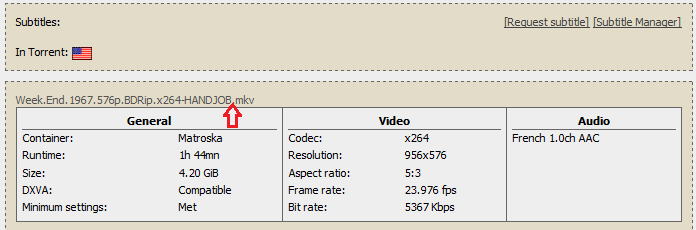
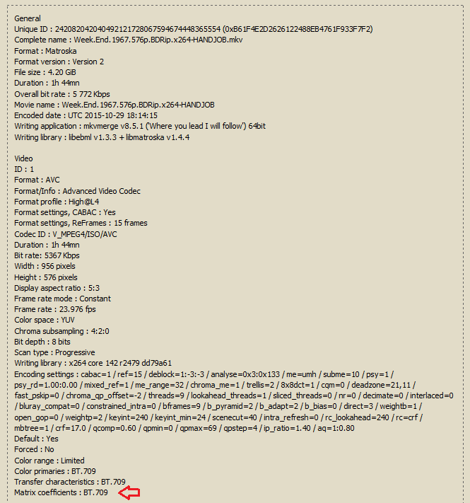
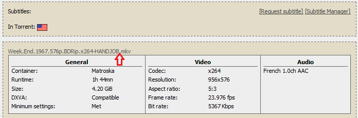
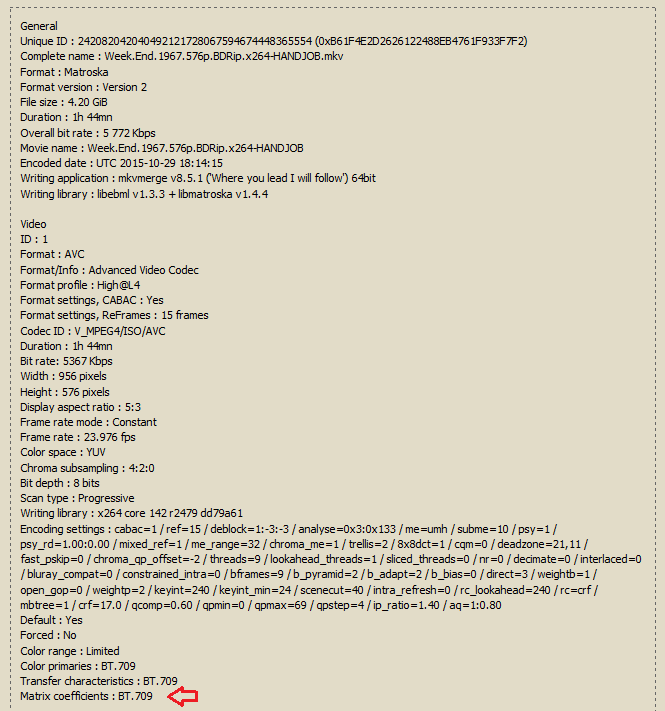
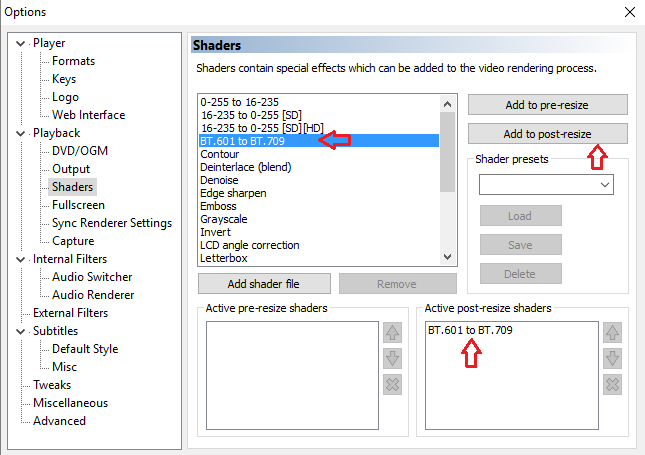
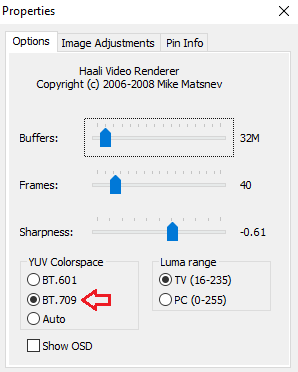
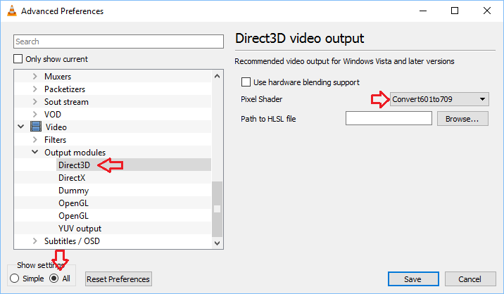

Introduction
Encodes made from Blu-rays should be displayed with the BT709 color matrix, while encodes made from DVDs should use BT601.
Most video players will try to automatically determine the correct color matrix of the file being played. Typically it works like this:
1. Check if the video has an embedded colormatrix tag, use it
2. If no tag is found, assume BT709 for HD resolution and BT601 for SD resolution
This works most of the time, except for Blu-ray sourced SD encodes that fail to include the colormatrix tag. In that case, virtually all players will assume the video comes from a DVD based on the resolution and apply the incorrect BT601 color matrix. Unfortunately, a lot of Blu-ray sourced SD encodes on PTP fall under that case.
This mistake is not easily spotted as comparisons in avspmod will always use the same matrix for the resized source and the encode. The difference will be only noticeable on playback, when the video player tries to guess or apply the tag embedded during the encoding process.
Example: Incorrect, Correct: Show comparison
How can I tell if my video uses an incorrect color matrix?
1. Make sure your encode is sourced from a Blu-ray and is in Standard Definition. Click on the file name to expand the Mediainfo.

2. In the Video section, look for the line "Matrix coefficients : BT.709".

If you can find it there, all is good. Close this page and enjoy the movie. If it is missing, you might have to correct it.
It is possible, although unlikely, that the encoder transformed the color matrix so it would be correctly played as bt601 but left it untagged. Read the torrent description and use your own eyes to make sure the correction is needed.
How do I correct the color matrix on playback?
If you downloaded an untagged Blu-ray-sourced SD encode you can override your video player's settings to display it correctly.
Remember to turn it off when you are done.
If you use standard mpc-hc (LAV Filters): Show
If you use mpc-hc+madVR: Show
If you use mpc-hc+Haali Video Renderer: Show
If you use Potplayer: Show
If you use VLC (on Windows): Show
Appendix: I am an encoder. How do I make sure my Blu-ray-sourced SD encodes are correct?
There are two strategies you can adopt. There is no clear consensus which one is better. Tagging as bt709 is foolproof and covers the majority of players, while converting to bt601 and tagging as bt601 ensures wider compatibility but is a bit more involved. In addition, the color primaries should be defined. Tagging the transfer characteristics is not necessary.
Tag as BT709: Show
OR
Convert to BT601 and tag it as such: Show
What about DVDs?
To be on the safe side, tag them in the following way:
PAL:
NTSC:
References
https://www.itu.int/dms_pubrec/itu-r/rec/bt/R-REC-BT.601-7-201103-I!!PDF-E.pdf
https://www.itu.int/rec/T-REC-H.264
Encodes made from Blu-rays should be displayed with the BT709 color matrix, while encodes made from DVDs should use BT601.
Most video players will try to automatically determine the correct color matrix of the file being played. Typically it works like this:
1. Check if the video has an embedded colormatrix tag, use it
2. If no tag is found, assume BT709 for HD resolution and BT601 for SD resolution
This works most of the time, except for Blu-ray sourced SD encodes that fail to include the colormatrix tag. In that case, virtually all players will assume the video comes from a DVD based on the resolution and apply the incorrect BT601 color matrix. Unfortunately, a lot of Blu-ray sourced SD encodes on PTP fall under that case.
This mistake is not easily spotted as comparisons in avspmod will always use the same matrix for the resized source and the encode. The difference will be only noticeable on playback, when the video player tries to guess or apply the tag embedded during the encoding process.
Example: Incorrect, Correct: Show comparison
Note: HANDJOB encodes are typically unaffected, as Handbrake adds the appropriate tags automatically.
How can I tell if my video uses an incorrect color matrix?
1. Make sure your encode is sourced from a Blu-ray and is in Standard Definition. Click on the file name to expand the Mediainfo.

2. In the Video section, look for the line "Matrix coefficients : BT.709".

If you can find it there, all is good. Close this page and enjoy the movie. If it is missing, you might have to correct it.
It is possible, although unlikely, that the encoder transformed the color matrix so it would be correctly played as bt601 but left it untagged. Read the torrent description and use your own eyes to make sure the correction is needed.
How do I correct the color matrix on playback?
If you downloaded an untagged Blu-ray-sourced SD encode you can override your video player's settings to display it correctly.
Remember to turn it off when you are done.
If you use standard mpc-hc (LAV Filters): Show
1. Open View - Options
2. Click on Output under Playback and make sure that you use a shaders-capable renderer (e.g. Enhanced Video Renderer custom presenter)
3. Click on Shaders under Playback
4. Select BT.601 to BT.709, click Add to post-resize and click OK.

If you use mpc-hc+madVR: Show
Press Ctrl+Shift+Alt+M to switch between color matrices.
If you use mpc-hc+Haali Video Renderer: Show
If you are using Haali Video Renderer in 2015 you should probably consider migrating to LAV Filters or madVR, but you can correct the color matrix all the same.
1. Open Play - Filters - Haali Video Renderer
2. Select BT.709 and click OK.

If you use Potplayer: Show
1. Right click on the video to open the menu
2. Select Video - Pixel Shader - Post Resize Pixel Shaders - BT601BT709
If you use VLC (on Windows): Show
Note: VLC apparently ignores the color matrix tag so you have to do the following every time you want to watch an SD encode made from a Blu-ray, regardless of the way it was tagged.
1. Open Tools - Preferences
2. Click on Show All
3. Click on Video - Output modules - Direct3D
4. Select Pixel Shader - Convert 601to709 and save

Appendix: I am an encoder. How do I make sure my Blu-ray-sourced SD encodes are correct?
There are two strategies you can adopt. There is no clear consensus which one is better. Tagging as bt709 is foolproof and covers the majority of players, while converting to bt601 and tagging as bt601 ensures wider compatibility but is a bit more involved. In addition, the color primaries should be defined. Tagging the transfer characteristics is not necessary.
Tag as BT709: Show
1. Add--colormatrix bt709 --colorprim bt709to your x264 parameters
OR
Convert to BT601 and tag it as such: Show
Only do this if you understand what you are doing! An example follows:
1. In avisynth:
dither_convert_yuv_to_rgb(output="rgb48y",chromak="spline36",matrix="709",lsb_in=false) #convert to 48bit RGB (interleaved 16b y8)
#if you are doing some debanding, do it here in 16 bit
dither_resize16(854,480,kernel="spline36") #resize
dither_convert_rgb_to_yuv(selectevery(3,0),selectevery(3,1),selectevery(3,2),chromak="spline36",matrix="601",lsb=false,mode=6) #convert and dither back to 8 bit yuv (if you did any debanding you can add grain here with ampn=x,staticnoise=false)
2. Add--colormatrix bt470bg --colorprim bt709to your x264 parameters
3. Mention in the torrent description that you converted the matrix
What about DVDs?
To be on the safe side, tag them in the following way:
PAL:
--colormatrix bt470bg --colorprim bt470bgNTSC:
--colormatrix smpte170m --colorprim smpte170mReferences
https://www.itu.int/dms_pubrec/itu-r/rec/bt/R-REC-BT.601-7-201103-I!!PDF-E.pdf
https://www.itu.int/rec/T-REC-H.264